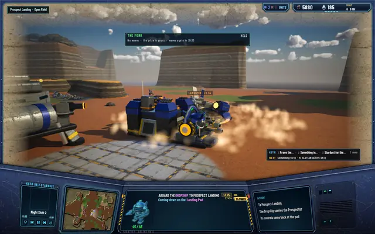
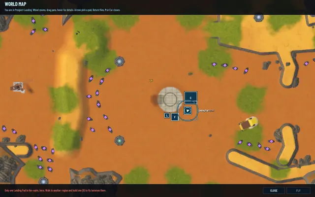
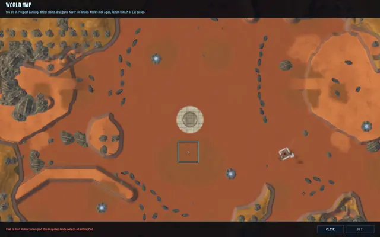
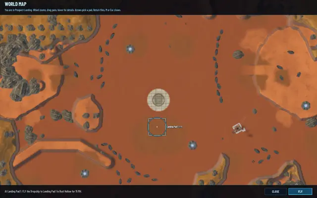

The siege has a sound
Two music beds rise over the radio while a canyon is fought near you, one for the waves and one for the Matriarch, and KSTR's announcer now reads the canyon news and your next goal out loud. The Dropship got its engines too. All of it made with ElevenLabs, and all of it ours.

The two beds
While a wave is out near you, or the game runs between waves, the wave layer plays over KSTR 88.7, the radio ducked under it. Its volume grows with the wave: 0.45 at wave 1, full at wave 10. When a wave breaks through and the Matriarch comes for the turrets, her layer takes over, and it plays whenever she stands in your region. Both fade in over 3 seconds and out over 4, and both go quiet the moment the canyon is held. The radio ducks to −24 dB in half a second and comes back over 2 seconds once they've gone.
The beds are ElevenLabs Music, instrumental, written for the game: a siege tension bed at 112 BPM in D minor for the waves, a boss dread bed at 84 BPM in C minor for her. An agent turned each into a seamless loop, half a second off the head, three seconds off the tail where the model writes its ending, and the last two seconds cross-faded over the start at equal power. They hold within 2 dB from end to end. Listen:
The wave layer · 60.5 s loop
The Matriarch layer · 44.5 s loop
KSTR speaks
The station's announcer, the same glossy voice that reads the ads, now has 28 lines: one for each goal in the radio's chain and one for a goal done, and for each canyon a line for a wave incoming, a wave beaten, the canyon held and the canyon fallen. All of them are under six seconds. They go through a queue, one at a time with 0.6 seconds between, never over a mission narration, at most four waiting, and a line older than 20 seconds is dropped unread.
The Fork has fallen
"The Fork has fallen! The Matriarch is coming for the turrets!"
The Fork is held
"The Fork is held! A whole day of peace out there."
The Dropship's flight got its sounds from the same shop: the engines spooling on the pad, the roar of the lift-off, a cruise loop, the retro burst on the approach and the touchdown. They're ElevenLabs sound effects, and silent in the hidden test runs.
Made offline, checked offline
Halfway through, ElevenLabs ran out of credits with 4 left and 5 of the 28 lines made, so the agent cut stand-in loops from two of our own retired tracks and kept going. I topped the account up the same day and everything was made for real: about 1,900 characters of speech and two music generations, 66 and 50 seconds. No run ever plays any of it aloud. Every cue is written to the game's log, the layers' levels, the radio's duck, each line, each flight sound, and a silent test run checks the timeline: a wave at The Fork brings its layer up and the radio down, a wave beaten reads its line, a breakthrough brings her layer and "has fallen", a hold takes both out and the radio back to full, a goal reached reads the next one, and a flight plays lift, cruise, retro and touch in order.
Also landed: the map says why
Before, a Landing Pad you couldn't fly to just wouldn't pick. Now the map says why: only one pad in the realm, and where to build the second; that's the region's own pad and the Dropship lands only on a Landing Pad; or, when it can be picked, the fare.
In pictures

The flight's last cue, the touchdown, with The Fork held.
One pad in the realm: the map tells you to build the second.
A region's own pad can't be picked, and the map says so.
Picked: the Dropship to Rust Hollow for 15 MH.